DEV
遊戲說明
玩家進入遊戲時，可在砲台處點擊【＋】、【－】按鈕調整發射子彈的押注額。
若設置砲台為【自動】，系統將會自動延續原有押注額，朝向指定的方向發射子彈。
若設置砲台為【鎖定】，系統將會自動延續原有押注額，只針對鎖定的物種進行攻擊。
子彈發射後，若擊中物種且捕獲成功即可得分。
賠率說明
彩金計算方式：押注額 x 擊中物種賠率 = 獲得彩金
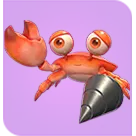
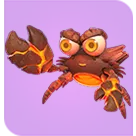
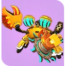
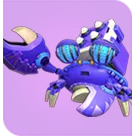
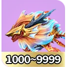
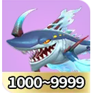
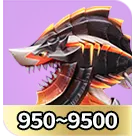
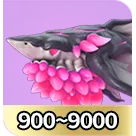
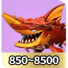
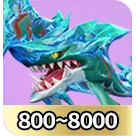
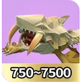
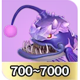
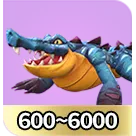
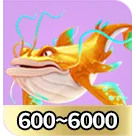
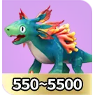
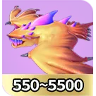
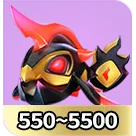
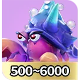
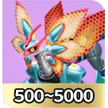
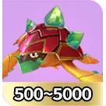
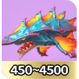
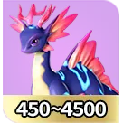
 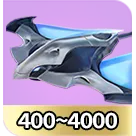
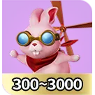
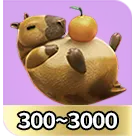
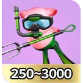
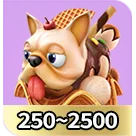
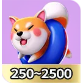
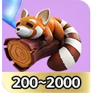
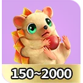
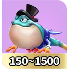
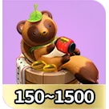
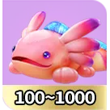
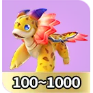
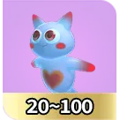
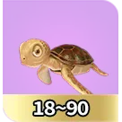
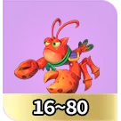
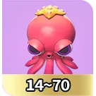
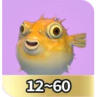
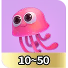
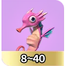
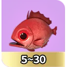
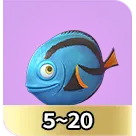
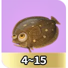
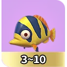
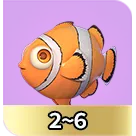
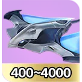
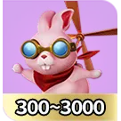
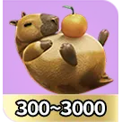
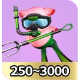
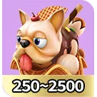
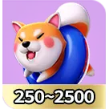
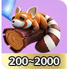
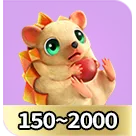
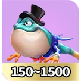
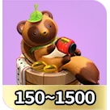
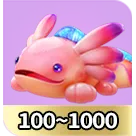
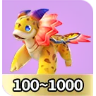
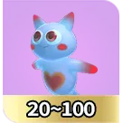
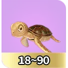
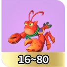
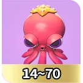
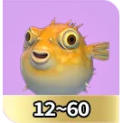
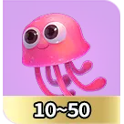
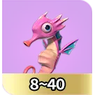
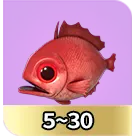
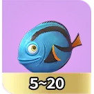
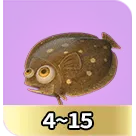
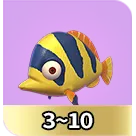
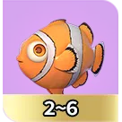
特殊武器
遊戲中有機會出現特殊武器螃蟹，捕獲會獲得武器。
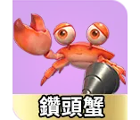
鑽頭砲發射出去後，會對路徑上的所有物種進行攻擊，鑽頭砲經過一段時間會消失，並且會結算期間獲得的所有彩金。
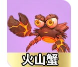
火山砲發射出去後，會對畫面上的所有物種進行攻擊，火山砲經過一段時間會消失，並且會結算期間獲得的所有彩金。
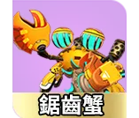
鋸齒砲發射出去後，會對路徑上的所有物種進行攻擊，鋸齒砲經過一段時間會消失，並且會結算期間獲得的所有彩金。
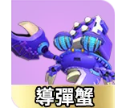
導彈砲發射出去後，會對區域內的所有物種進行攻擊，導彈砲經過一段時間會消失，並且會結算期間獲得的所有彩金。
※30秒內沒發射特殊武器會由系統自動發射。